5040A64 pipe from evaporator to dehydrating filter/accumulator - r+r
- Path
- Procedures > 50 AUXILIARY UNITS > 5040 AIR CONDITIONING CASING AND COMPONENTS > 5040A air conditioner coolant circuit > 5040A64 pipe from evaporator to dehydrating filter/accumulator - r+r
- Kind
- repair procedure (removal / refitting; the operation number is the code)
- Applies to
- engines: 1.6 TS, 2.0 TS, 3.2 V6, 1.9 JTD 8V; all production periods
- Interactive page
- https://sloeber94.github.io/elrnDB-a147/en/#/3025422
Applies to: all engines; all production periods
Applies to: engines: 1.6 TS, 2.0 TS; all production periods
 Removing
Removing
 Refitting
RefittingDrain the coolant (5040A10 Air conditioning refrigerant CIRCUIT - Draining and Refilling ).
7055B54 under-engine guard - r r
5040B14 air conditioner system multi-level pressure switch - r+r
1048A34 sleeve(s) from flow meter to air supply capacity case - r + r
1008C10 power unit upper reaction link r r
1. Undo the bolt fixing the pipe connector from the drier filter.
2. Disconnect the connector from the drier filter.
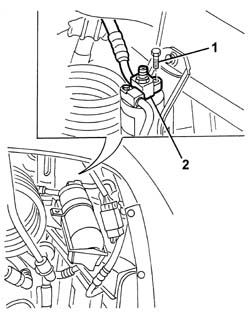
Applies to: engines: 1.6 TS, 2.0 TS; all production periods
Lower the vehicle.
1. Undo the nut for the intermediate coupling for the pipe from the evaporator to the compressor.
2. Disconnect the coupling.
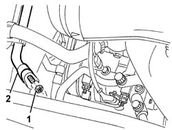
Applies to: engines: 1.6 TS, 2.0 TS; all production periods
1. Undo the bolt fixing the pipes to the evaporator.
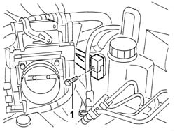
Applies to: engines: 1.6 TS, 2.0 TS; all production periods
1. Disconnect the pipes from the retaining bands on the bodyshell.
2. Undo the bolts fixing the engine coolant reservoir.
3. Move the reservoir.
4. Remove the pipes.
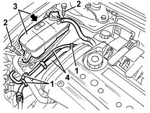
Applies to: engines: 1.6 TS, 2.0 TS; all production periods
1. Work at the bench and remove the pipe bands.
2. Separate the pipe from the evaporator to the drier filter (2a) from the evaporator inlet pipe (2b) and recover the bush (2c).
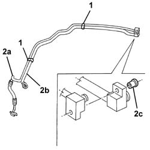
Applies to: engines: 1.6 TS, 2.0 TS; all production periods
Refitting
RemovingCheck that the pipe is not damaged and that there are no cracks which would affect the seal.
Join the pipe from the evaporator to the drier filter with the evaporator inlet pipe using the bush and the bands.
Position the pipes and connect them to the bodyshell using the retaining bands.
Connect the connectors for the pipes to the evaporator and secure them using the bolt.
 | Fastening | Component | Ø | Value (daNm) |
|---|---|---|---|---|
- | Bolt | COOLANT SYSTEM FITTINGS | M6 | 0.9 |
Position the engine coolant reservoir and secure it using the bolts.
Connect the intermediate connector and secure it using the nut.
| Fastening | Component | Ø | Value (daNm) |
|---|---|---|---|---|
- | Nut | COOLANT SYSTEM FITTINGS | M6 | 0.9 |
Connect the connector to the drier filter and secure it using the bolt.
| Fastening | Component | Ø | Value (daNm) |
|---|---|---|---|---|
- | Bolt | COOLANT SYSTEM FITTINGS | M6 | 0.9 |
1008C10 power unit upper reaction link r r
1048A34 sleeve(s) from flow meter to air supply capacity case - r + r
5040B14 air conditioner system multi-level pressure switch - r+r
7055B54 under-engine guard - r r
Repressurize using coolant fluid (5040A10 Air conditioning refrigerant CIRCUIT - Draining and Refilling ).
Applies to: all engines; all production periods
Applies to: engines: 1.9 JTD 8V; all production periods
Removing
RefittingDrain the coolant (5040A10 Air conditioning refrigerant CIRCUIT - Draining and Refilling ).
7055B54 under-engine guard - r r
5040B14 air conditioner system multi-level pressure switch - r+r
1008C10 power unit upper reaction link r r
1. Undo the bolt fixing the pipe connector from the drier filter.
2. Disconnect the connector from the drier filter.
Applies to: engines: 1.9 JTD 8V; all production periods
Lower the vehicle.
1. Undo the engine guard bolts.
2. Undo the oil filler cap (2a) and remove the engine guard (2b), then retighten the oil filler cap.
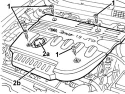
Applies to: engines: 1.9 JTD 8V; all production periods
1. Undo the nut for the intermediate coupling for the pipe from the evaporator to the compressor.
2. Disconnect the coupling.
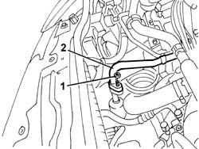
Applies to: engines: 1.9 JTD 8V; all production periods
1. Slacken the band andn disconnect the power unit coolant pipe.
2. Disconnect the electrical connections (2a (2b).
 | Name | Connector |
|---|---|---|
2a | Engine management ECU |
| Name | Connector |
|---|---|---|
2b | Front / engine coupling |
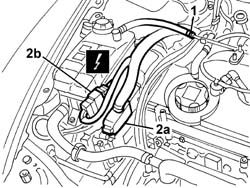
Applies to: engines: 1.9 JTD 8V; all production periods
1. Disengage the fuel delivery pipe to the filter.
2. Loosen the band and disconnect the diesel pipe.
3. Withdraw the pipe (3a) from the retainer (3b).
4. Unscrew the nuts.
5. Move the mounting with diesel filter.
6. Disconnect the electrical connections (6a, 6b).
| Name | Connector |
|---|---|---|
6a | Diesel preheating resistor |
| Name | Connector |
|---|---|---|
6b | Fuel temperature sensor |
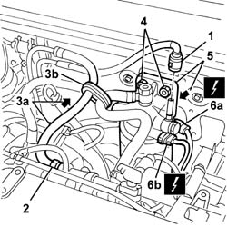
Applies to: engines: 1.9 JTD 8V; all production periods
1. Undo the nut securing the plug control unit.
2. Move the plug control unit aside.
3. Disconnect the electrical connections (3a, 3b).
| Name | Connector |
|---|---|---|
3a | Plug preheating control unit |
| Name | Connector |
|---|---|---|
3b | Plug preheating control unit |
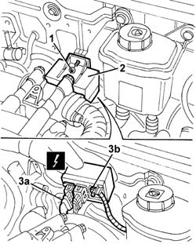
Applies to: engines: 1.9 JTD 8V; all production periods
1. Undo the bolt fixing the pipes to the evaporator.
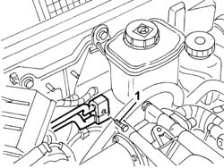
Applies to: engines: 1.9 JTD 8V; all production periods
1. Disconnect the two pipes from the retaining bands on the bodyshell.
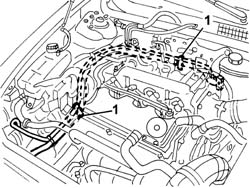
Applies to: engines: 1.9 JTD 8V; all production periods
1. Work at the bench and remove the pipe bands.
2. Separate the pipe from the evaporator to the drier filter (2a) from the evaporator inlet pipe (2b) and recover the bush (2c).
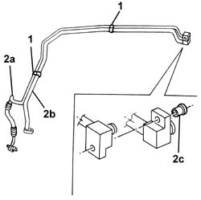
Applies to: engines: 1.9 JTD 8V; all production periods
Refitting
RemovingCheck that the pipe is not damaged and that there are no cracks which would affect the seal.
Join the pipe from the evaporator to the drier filter with the evaporator inlet pipe using the bush and the bands.
Position the pipes and connect them to the bodyshell using the retaining bands.
Connect the connectors for the pipes to the evaporator and secure them using the bolt.
| Fastening | Component | Ø | Value (daNm) |
|---|---|---|---|---|
- | Bolt | COOLANT SYSTEM FITTINGS | M6 | 0.9 |
Connect the electrical connections and position the plug control unit.
Tighten the nut securing the plug control unit.
Connect the electrical connections and position the mounting with diesel filter.
Tighten the nuts on the mounting with diesel filter.
Insert the pipe in the retainer.
Connect the diesel pipe and secure it with the band.
Engage the fuel supply pipe to the filter.
Connect the electrical connections .
Connect the power unit coolant pipe and secure it with the band.
Connect the intermediate connector and secure it using the nut.
| Fastening | Component | Ø | Value (daNm) |
|---|---|---|---|---|
- | Nut | COOLANT SYSTEM FITTINGS | M6 | 0.9 |
Undo the oil filler plug, position the engine guard and retighten the oil cap.
Tighten the bolts securing the engine guard.
Connect the connector to the drier filter and secure it using the bolt.
| Fastening | Component | Ø | Value (daNm) |
|---|---|---|---|---|
- | Bolt | COOLANT SYSTEM FITTINGS | M6 | 0.9 |
1008C10 power unit upper reaction link r r
5040B14 air conditioner system multi-level pressure switch - r+r
7055B54 under-engine guard - r r
Repressurize using coolant fluid (5040A10 Air conditioning refrigerant CIRCUIT - Draining and Refilling ).
Applies to: engines: 3.2 V6; all production periods
Removing
RefittingDrain the coolant (0010T84 coolant for air conditioning system dehydrate and recharge ).
7055B54 under-engine guard - r r
7055B64 Engine compartment DUST shield in front wheel arch (one), left or right - R.R.
7055B42 Additional FRONT WHEEL ARCH (one), left or right - R.R.
5540B76 Front LIGHT CLUSTER with fog light (one), left or right - R.R. with interfering components removed (right and left)
5040B14 air conditioner system multi-level pressure switch - r+r (Multistage pressure switch R.R.)
1. Loosen the band (1a) and disconnect the flexible engine coolant recirculation pipe (1b) from the fixed pipe (1c).
2. Undo the bolts (2a) and (2b), then remove the reaction connecting rod (2c).
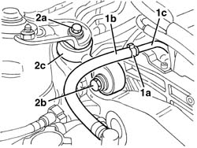
Applies to: engines: 3.2 V6; all production periods
1. Undo the nut fixing the intermediate coupling for the pipe from the climate control casing to the compressor.
2. Disconnect the intermediate coupling.
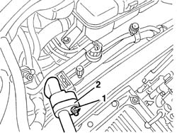
Applies to: engines: 3.2 V6; all production periods
1. Undo the bolt (1a) fixing the pipes to the climate control casing and disconnect the connectors (1b).
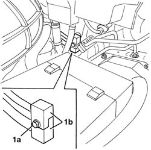
Applies to: engines: 3.2 V6; all production periods
1. Disconnect the electrical connection.
| Name | Connector |
|---|---|---|
1 | Engine management ECU |
2. Release the retainers (2a) and open the cover (2b).
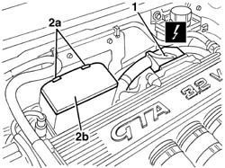
Applies to: engines: 3.2 V6; all production periods
1. Extract the support with the electrical connections from the casing.
2. Disconnect the electrical connections (2a, 2b, 2c, 2d, 2e).
| Name | Connector |
|---|---|---|
2a | Lambda sensor downstream of post-catalyzer |
| Name | Connector |
|---|---|---|
2b | Lambda sensor on catalyzer -2 |
| Name | Connector |
|---|---|---|
2c | /Front passenger door. rear coupling |
| Name | Connector |
|---|---|---|
2d | Front / engine coupling |
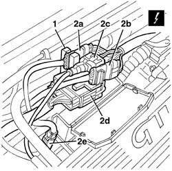
Applies to: engines: 3.2 V6; all production periods
1. Working in front of the right front wheel, release the buttons retaining the air duct using the special tool.
 | Name | Country |
|---|---|---|
1 | Scraper blade | 1.823.015.000 |
2. Undo the bolts fixing the air duct.
3. Remove the air duct.
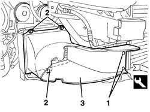
Applies to: engines: 3.2 V6; all production periods
1. Undo the bolt and disconnect the connector (1a) for the condenser pipe (1b).
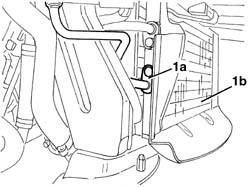
Applies to: engines: 3.2 V6; all production periods
1. Using a hydraulic jack (1a), support the left engine mounting (1b).
2. Undo the bolt for the left engine mounting.
3. Using the hydraulic jack (1a), lower the engine until it is in the end of travel position.
4. Remove the hydraulic jack.
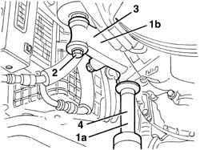
Applies to: engines: 3.2 V6; all production periods
1. Disconnect the wiring (1a) from the front crossmember (1b).
2. Undo the nuts (2a) and move the bonnet lid lock (2b).
3. Undo the bolts (3a) fixing the front crossmember (1b).
4. Remove the front crossmember.
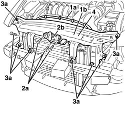
Applies to: engines: 3.2 V6; all production periods
1. Open the fastening bands on the bodyshell (1a) and remove the inlet and outlet pipe from the climate control casing (1b).
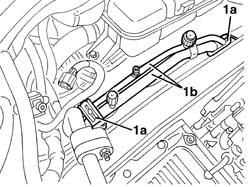
Applies to: engines: 3.2 V6; all production periods
1. At the bench, remove the pipe bands.
2. Separate the pipe from the evaporator to the drier filter (2a) from the pipe (2b) and keep the bush (2c).
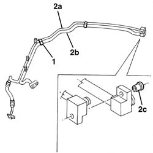
Applies to: engines: 3.2 V6; all production periods
Refitting
RemovingCheck that the pipe is not damaged and that there are no cracks which would affect the seal.
At the bench, join the pipe from the evaporator to the drier filter with the other pipe using the bush and the bands.
Position the pipes and connect them to the bodyshell using the brackets.
Place the front crossmember in position and secure it using the bolts.
Place the bonnet lid lock in position and screw in the nuts without tightening them.
Connect the wiring to the front crossmember.
Position the hydraulic jack under the left engine support.
Raise the engine, then tighten the left support bolt.
Connect the connector for the condenser pipe and tighten the bolt.
| Fastening | Component | Ø | Value (daNm) |
|---|---|---|---|---|
- | Bolt | COOLANT SYSTEM FITTINGS | M6 | 0.9 |
Place the air duct in position and secure it using the bolts.
Engage the air duct retaining buttons.
Connect the electrical connections and assembly to the support and fit them in the casing.
Close the casing.
Connect the engine control unit electrical connection.
Connect the connectors for the pipes to the climate control casing and tighten the bolt.
| Fastening | Component | Ø | Value (daNm) |
|---|---|---|---|---|
- | Bolt | COOLANT SYSTEM FITTINGS | M6 | 0.9 |
Connect the intermediate coupling and tighten the nut.
| Fastening | Component | Ø | Value (daNm) |
|---|---|---|---|---|
- | Nut | COOLANT SYSTEM FITTINGS | M6 | 0.9 |
Place the reaction connecting rod in position and tighten the bolts.
| Fastening | Component | Ø | Value (daNm) |
|---|---|---|---|---|
- | Bolt | REACTION ROD | M10 | 4.5 ÷ 5.5 |
Connect the engine coolant flexible recirculation pipe and secure it using the band.
5040B14 air conditioner system multi-level pressure switch - r+r
5540B76 Front LIGHT CLUSTER with fog light (one), left or right - R.R. with interfering components removed (right and left)
7210E10 R.R. CENTRE PILLAR (Front bumper R.R.)
7055B42 Additional FRONT WHEEL ARCH (one), left or right - R.R.
7055B64 Engine compartment DUST shield in front wheel arch (one), left or right - R.R.
7055B54 under-engine guard - r r
1. With the nuts (1a) screwed in but not tightened, adjust the position of the bonnet lid lock (1b). The arrows (1c) indicate the possible movements.
2. Tighten the nuts (1a) to the recommended torque.
| Fastening | Component | Ø | Value (daNm) |
|---|---|---|---|---|
- | Nut | BONNET LID LOCK/S | M6 | 0.8 |
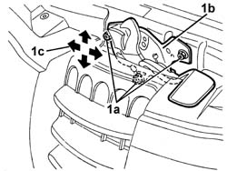
Applies to: engines: 3.2 V6; all production periods
Repressurize using coolant fluid (0010T84 coolant for air conditioning system dehydrate and recharge ).
Topics linked from this page (21)
- 0010T84 coolant for air conditioning system dehydrate and recharge
- 1008C10 power unit upper reaction link r r
- 1048A34 sleeve(s) from flow meter to air supply capacity case - r + r
- 5040 AIR CONDITIONING CASING AND COMPONENTS
- 5040A10 Air conditioning refrigerant CIRCUIT - Draining and Refilling
- 5040B14 air conditioner system multi-level pressure switch - r+r
- 5540B76 Front LIGHT CLUSTER with fog light (one), left or right - R.R. with interfering components removed
- 7055B42 Additional FRONT WHEEL ARCH (one), left or right - R.R.
- 7055B54 under-engine guard - r r
- 7055B64 Engine compartment DUST shield in front wheel arch (one), left or right - R.R.
- 7210E10 R.R. CENTRE PILLAR
- D4 Front / engine coupling
- D31 /Front passenger door. rear coupling
- K17 Lambda sensor downstream of post-catalyzer
- K18 Lambda sensor on catalyzer -2
- K81 Fuel temperature sensor
- M10 Engine management ECU
- M10B Engine management ECU ( ENGINE )
- M15A Plug preheating control unit ( Connectors )
- M15C Plug preheating control unit ( Connectors )
- O20 Diesel preheating resistor